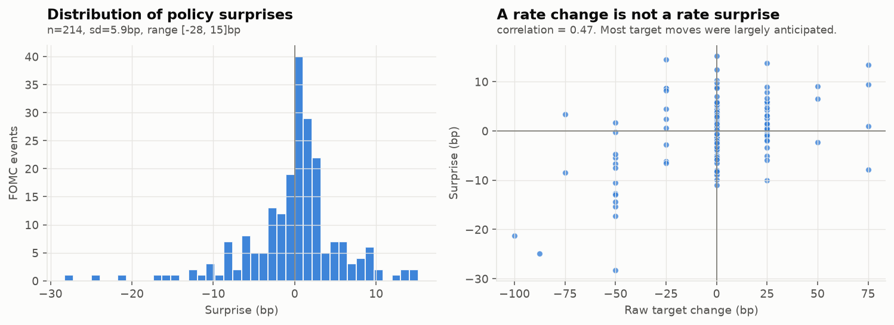
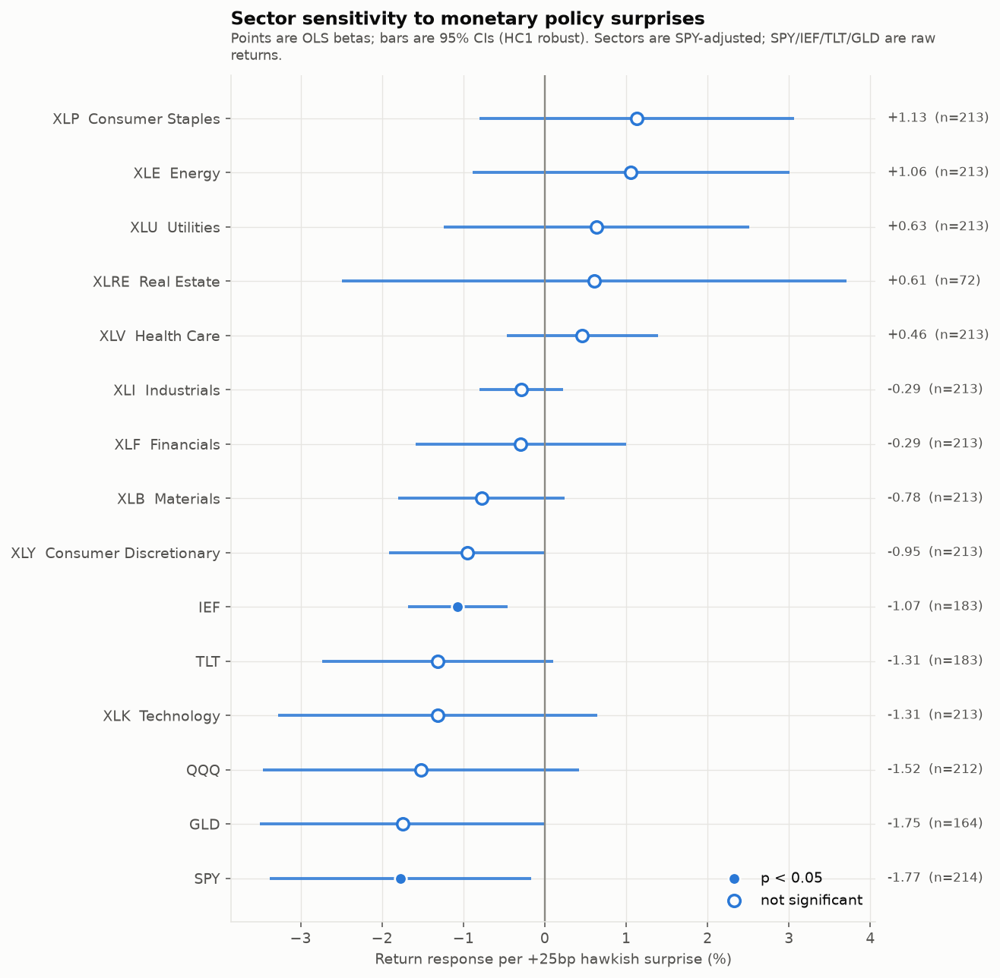
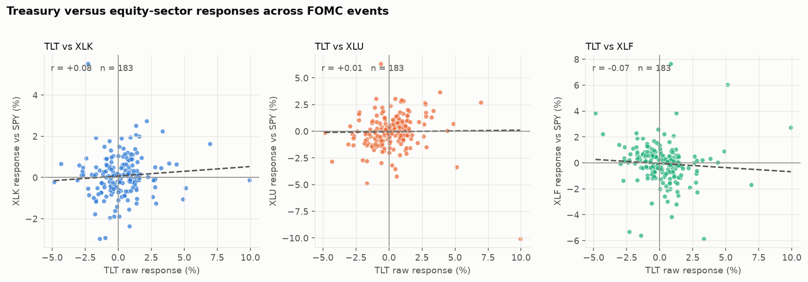
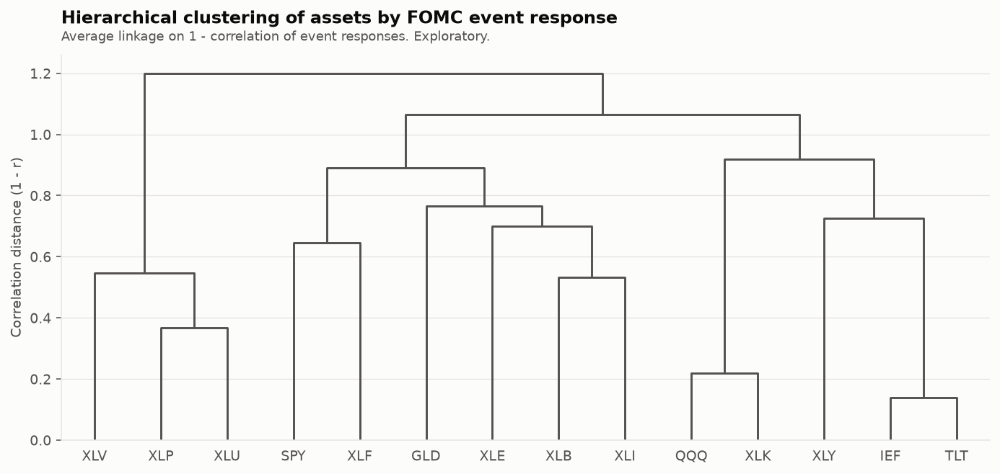
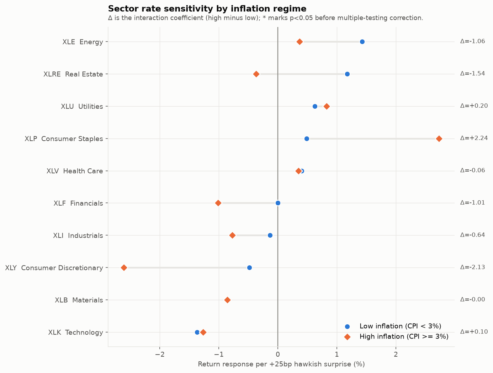
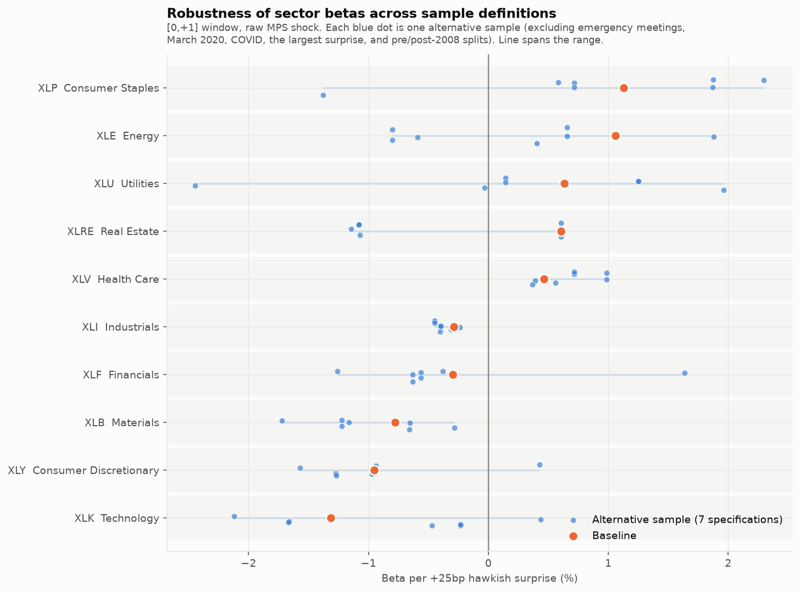

Research question
How do unexpected Fed announcements move equity sectors?
And does that sensitivity change when inflation is high?
Markets price expectations. If the FOMC delivers exactly the hike that futures already implied, the discount rate embedded in valuations does not move — and neither should equities. The explanatory variable in this study is therefore not the change in the fed funds target but the expectation-adjusted policy surprise.
I use the Bauer & Swanson (2023) measure published by the Federal Reserve Bank of San Francisco: the first principal component of 30-minute moves in Eurodollar and SOFR futures around each announcement. The window is narrow enough that essentially no other macroeconomic news enters it, which is what buys the identification. Sector responses are SPY-adjusted abnormal returns over a [0,+1] trading-day window; Treasuries and gold enter on a raw-return basis.
The identification point
A rate change is not a rate surprise
The distinction is not a technicality in this sample.
Of the 215 announcements studied, 144 involved no change in the fed funds target at all — yet those meetings still carry surprises with a standard deviation of 4.0bp, because the FOMC moved expectations through guidance rather than through the current-period rate.
Across the full sample, the realized target change and the measured surprise correlate only 0.467. A design keyed on the realized change would discard most of the usable variation and mismeasure the rest.
A positive surprise means futures-implied rates repriced upward: policy was tighter than expected. This is verified rather than assumed — regressing the 30-minute 10-year Treasury yield response on the surprise gives a slope of +0.44 (t = 7.0).

Main results
Sector sensitivity to monetary policy surprises
Return response per +25bp tighter-than-expected surprise, with 95% confidence intervals.

Table scrolls horizontally →
| Asset | β per +25bp | 95% CI | p | Bootstrap p | n | Basis |
|---|---|---|---|---|---|---|
| SPY S&P 500 | −1.77 | [−3.38, −0.16] | 0.031 | 0.076 | 214 | raw |
| IEF 7-10y Treasuries | −1.07 | [−1.68, −0.46] | <0.001 | 0.003 | 183 | raw |
| TLT 20y+ Treasuries | −1.31 | [−2.73, +0.10] | 0.069 | 0.104 | 183 | raw |
| GLD Gold | −1.75 | [−3.50, +0.01] | 0.051 | 0.079 | 164 | raw |
| QQQ Nasdaq 100 | −1.52 | [−3.47, +0.42] | 0.126 | 0.184 | 212 | vs SPY |
| XLK Technology | −1.31 | [−3.27, +0.64] | 0.188 | 0.316 | 213 | vs SPY |
| XLY Consumer Discretionary | −0.95 | [−1.92, +0.01] | 0.053 | 0.067 | 213 | vs SPY |
| XLB Materials | −0.78 | [−1.80, +0.24] | 0.136 | 0.180 | 213 | vs SPY |
| XLF Financials | −0.29 | [−1.59, +1.00] | 0.654 | 0.725 | 213 | vs SPY |
| XLI Industrials | −0.29 | [−0.80, +0.22] | 0.266 | 0.279 | 213 | vs SPY |
| XLV Health Care | +0.46 | [−0.47, +1.39] | 0.328 | 0.352 | 213 | vs SPY |
| XLRE Real Estate | +0.61 | [−2.49, +3.71] | 0.701 | 0.807 | 72 | vs SPY |
| XLU Utilities | +0.63 | [−1.24, +2.51] | 0.508 | 0.554 | 213 | vs SPY |
| XLE Energy | +1.06 | [−0.89, +3.01] | 0.286 | 0.350 | 213 | vs SPY |
| XLP Consumer Staples | +1.13 | [−0.80, +3.06] | 0.252 | 0.276 | 213 | vs SPY |
Shaded rows are significant at the 5% level. HC1 robust standard errors; bootstrap column is a Rademacher wild bootstrap imposing the null. XLRE has only 72 usable events and should be treated as uninformative.
The broad market response is large
A +25bp hawkish surprise moves the S&P 500 by −1.77% (p = 0.031). This is the headline effect and it is well identified.
Treasuries give the cleanest signal
IEF returns −1.07% per +25bp (p < 0.001, bootstrap p = 0.003) — the best-identified coefficient in the study, as a near-mechanical duration effect should be.
No single sector clears 5%
The ordering is economically sensible — Technology and Consumer Discretionary at the sensitive end, Staples and Energy at the defensive end — but the smallest sector p-value is 0.053. The cross-section is suggestive, not established.
Pooling recovers the cyclical effect
A pooled test of cyclicals (XLY, XLI, XLB) with event-clustered errors gives −0.67% (p = 0.029) — more power than any single-asset regression.
Cross-asset
Equity sectors rotate; they do not track bonds
Correlation of event responses across 215 announcements.
The striking feature is how weak the bond–equity links are. Sector responses correlate strongly with each other — Technology against Staples at −0.62, Utilities against Staples at +0.66 — but barely at all with Treasuries (|r| ≤ 0.32). Around FOMC announcements the dominant axis of equity variation is cyclical-versus-defensive rotation, not shared duration exposure with bonds.
Consumer Discretionary is the exception, and the clustering agrees: it is the one equity sector that groups with the two Treasury funds rather than with the defensives. Real Estate — the sector whose textbook duration story is strongest — is absent from the clustering entirely, because its 72-event history is too short to include.


Inflation regime
Does high inflation amplify rate sensitivity?
Pre-registered prediction: yes. The data say otherwise.
At each announcement I attach the most recently released CPI report — joined by an as-of merge on timestamps against 390 real BLS release dates, so no CPI published after the meeting can leak into the regime flag. High inflation is headline CPI YoY ≥ 3%, giving 62 high- and 153 low-inflation events spanning 2000–2008, 2011 and 2021–2023 — a genuine regime variable, not a disguised 2022 dummy.
The amplification hypothesis is not supported for equities. Every sector-level interaction is insignificant. The pre-registered prior was wrong, and it is reported as wrong.
Gold responds strongly negatively to hawkish surprises when inflation is low (−3.44%) and roughly not at all when inflation is high (+0.75%). That interaction keeps its sign across all five inflation thresholds tested (2.99 to 4.59) — consistent with inflation-hedge demand offsetting the real-rate channel.
Consumer Discretionary looks like amplification at the 3% threshold (−2.13, p = 0.056) but reverses sign at a 2% threshold (+0.38). It is specification-sensitive and is not promoted to a finding.

Robustness
2,886 estimates, none discarded
8 sample filters × 4 windows × 2 shock measures × 3 return definitions, plus 465 interaction estimates across 5 inflation thresholds.
Every specification run is persisted to
results/tables/, including the ones that disagree with the
headline. What holds across the entire battery: IEF's sign and magnitude
are essentially invariant, and
GLD, QQQ, TLT, XLB, XLI, XLV never change
sign either.
What does not: 7 of 10 sector betas are not sign-stable. Utilities alone spans −2.44 to +1.96. The instability is concentrated in one place — under the six exclusion-type filters only XLE, XLRE, XLU flip, but splitting the sample pre/post-2008 additionally flips SPY, XLF, XLK, XLP, XLY. The zero-lower-bound era is a genuinely different monetary regime, and the cross-section does not survive it. That is reported here rather than buried, because it is the main reason the cross-sectional result is framed as suggestive.

Methodology
Design
- Sample. 215 FOMC announcements, 1998-12-22 to 2023-12-13, 15 unscheduled. Every date validated against the Federal Reserve's own announcement history — 207 by statement URL, 5 by minutes, 3 unscheduled confirmed by press-release title. Zero unvalidated.
- Shock. Bauer–Swanson MPS, first principal component of 30-minute changes in ED1–ED4 Eurodollar futures (SOFR from 2023), converted to basis points. The orthogonalized variant is reported throughout as a co-primary specification.
- Windows. [−5,+5], [−1,+1], [0,+1] (pre-registered baseline) and [0,+5]. Daily and intraday estimates are reported as separate coefficients, never mixed.
- Abnormal return. AR = Rsector − RSPY for sectors; raw returns for SPY, IEF, TLT and GLD.
- Inference. HC1 robust standard errors; HC0/HC3 and a wild bootstrap in the robustness battery. Betas reported per +25bp.
Pre-registration
Directional hypotheses were committed to git before any regression was estimated, and the file has not been edited since. Three of six directional priors — Financials, Utilities and Real Estate — came out with the wrong sign. They were not rewritten.
Limitations
What this study cannot claim
- The surprise dataset ends 2023-12-13, the limit of the published Bauer–Swanson update. Nothing here speaks to policy after that date.
- Statistical power is the binding constraint. 215 events with a 5.9bp surprise standard deviation leaves sector confidence intervals ±2–3 percentage points wide. The FOMC meets eight times a year; no econometric choice relaxes this.
- High-frequency analysis is limited to the 30-minute measurements that ship with the Bauer–Swanson dataset. No sector-level intraday data was available, so wider intraday windows could not be constructed.
- Longer windows admit more unrelated news. For an identical shock and asset, R² falls from 0.25 in a 30-minute window to 0.09 over two days. Wider windows give larger point estimates but weaker identification.
- XLRE has only 72 usable events (it launched in October 2015), is unstable under every perturbation, and is excluded from the PCA and clustering.
- Many sector coefficients are specification-sensitive — 7 of 10 change sign across the full robustness battery, mostly driven by the pre/post-2008 sub-period split.
- These are event-study associations, not structural causal estimates. The design identifies price responses to policy news in a 1–2 day window. It says nothing about the real economy, longer-horizon returns, or sector fundamentals.
Reproducibility
One command regenerates everything
The research pipeline is plain Python and runs locally. This page is a static artifact built from its output — no analysis runs in the browser or on the server.
git clone git@github.com:Gariyuuu/rate-shock.git
cd rate-shock
python3.11 -m venv .venv
./.venv/bin/pip install -r requirements.txt
./.venv/bin/python scripts/run_analysis.py # tables + figures
./.venv/bin/python -m pytest tests/ -q # 70 testsDeleting results/ and re-running regenerates all 19
CSV/JSON artifacts byte-for-byte identically.
tests/test_frozen_results.py pins the headline estimates so
a future refactor cannot silently move a conclusion.
Repository on GitHub →
Full empirical report →
Data provenance →